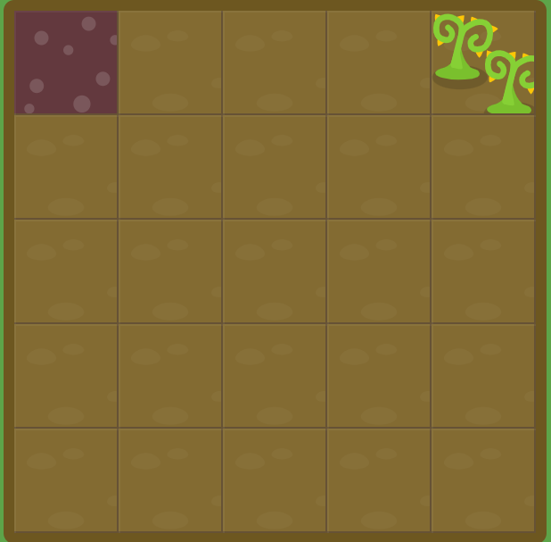
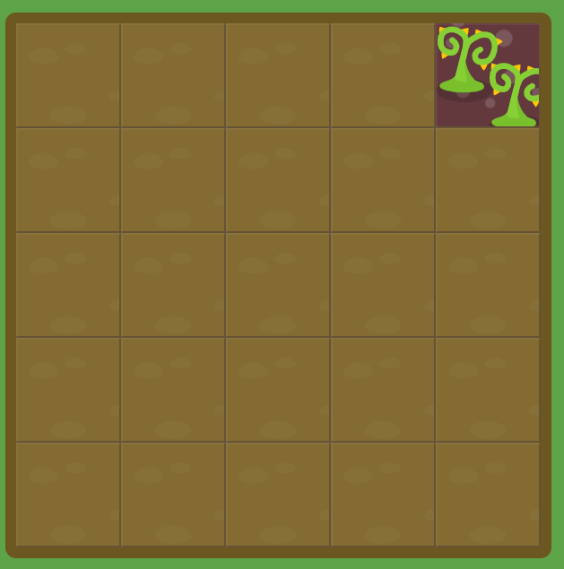

display grid = container grid, Assim, podemos controlar exatamente em qual linha e coluna o elemento ficará. grid-template-columns 20% 20% 20% 20% 20%; Isso divide o jardim em 5 colunas iguais. grid-template-rows: 20% 20% 20% 20% 20%; Faz a mesma coisa verticalmente: cria 5 linhas iguais. Portanto, o jardim possui: 5 coluns × 5 linhas = 25 células.

grid-column-start: 5; estamos dizendo: Comece o elemento na linha vertical número 5. Como o #poison ocupa uma célula de largura padrão, ele fica na quinta coluna: ou seja start significa o ponto onde o elemento começa, e 5 indica a linha vertical do Grid onde ele deve começar.